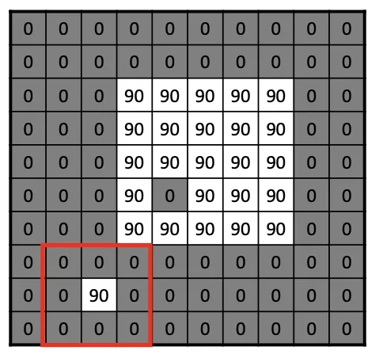

计算机视觉 · 第 2 章 图像处理基础
2.6 互相关与卷积
前面几节把均值、中值、高斯滤波都做过一遍了，但一直没有给那个反复出现的动作正式命名——「把滤波矩阵盖在图像上，按位相乘再求和」。这一节补上这一步：先定义互相关，再定义卷积（比互相关多一次 180° 旋转），然后说明为什么深度学习里说的「卷积」其实是互相关；最后回到动机，看滤波如何从一种去噪手段变成提取特征的手段。
1. 互相关：按位相乘再求和
互相关（cross-correlation）的定义是：对图像矩阵和滤波矩阵按位进行逐个元素相乘再求和的操作。这里参与运算的那个小矩阵就是卷积核，也叫滤波矩阵——上一节的 1/9 均值核、高斯核，都是它。
按这个定义回头看，前面几节里的均值滤波和高斯滤波做的都是互相关：核的九个位置与原图上被盖住的九个像素一一相乘，再把九个乘积加起来，结果写进中心像素的位置；核滑过整幅图，就得到滤波后的图像。以 3×3 的均值核为例：
核（滤波矩阵） 核盖住的图像小块
1/9 1/9 1/9 a b c
1/9 1/9 1/9 d e f
1/9 1/9 1/9 g h i
输出 = (a + b + c + d + e + f + g + h + i) / 9因为核里九个权重都是 1/9，这个式子的结果就是九个像素的算术平均——「按位相乘求和」正是上一节滑窗动画每一步在算的东西。

2. 卷积：先把核顺时针旋转 180°
卷积（convolution）与互相关的差别只有一步：先对滤波矩阵顺时针旋转 180°（由下到上、由右到左），而后再按位点乘求和。所谓旋转 180°，就是把行序和列序同时倒过来，原先在右下角的元素转到左上角：
核 K 顺时针旋转 180°
a b c i h g
d e f ──→ f e d
g h i c b a这一步在前面的例子里其实看不出来，因为常用的核都是对称的：均值核九个权重全是 1/9，高斯核也关于中心对称，转不转都还是同一个矩阵，所以那些结果用互相关和卷积解释都成立。只有当核本身不对称时，两者才会算出不同的结果——这也是判断一个「滤波」到底该叫互相关还是卷积的关键。
课件在这里专门加了一条注记：深度学习中的卷积可以看作互相关运算，因为深度学习中的卷积核的参数是可学习的。既然核里每个权重都是训练出来的，那么「先旋转 180°」与否只相当于参数以另一种顺序排列，网络完全可以把这点差别学进参数里；因此框架中名为卷积（conv）的层，实际执行的往往是互相关。判断一次运算在数学上该叫互相关还是卷积，只看滤波矩阵有没有先翻转 180°。
3. 滤波与卷积的动机：从去噪到提取特征
最后一张课件把视角拉高了一层，标题就是图像滤波与卷积的动机——提取特征：一开始，是将滤波看作一种去除噪声的方式；现在，考虑滤波器如何提取高层特征。课件给出两条理由：一是把原始像素映射到某种表示，以便后续处理；二是减少数据量，丢弃冗余，保留有用的内容（如边缘信息）。
换个角度说，同一个「按位相乘求和」的动作，核换成什么，目的就变成什么：用 1/9 的均值核是在和邻居求平均，目的是平滑；如果换成衡量相邻像素灰度差的核，输出反映的就不再是「平均」，而是灰度变化的快慢——边缘信息就是这么被保留下来的，这正是下一节图像梯度与边缘检测接着要展开的内容；再往后，第 6 章讲卷积神经网络时，那些核里的权重不再由人手工写死，而是从数据里学出来，用以逐层提取从边缘到物体的高层特征。去噪是这套运算的起点，特征提取是它真正的野心。
本节小结
- 互相关是对图像矩阵和滤波矩阵按位逐元素相乘再求和；参与运算的小矩阵叫卷积核或滤波矩阵。前面几节的均值滤波与高斯滤波，在「乘以权重再求和」这一层都可以用互相关来理解（中值滤波取的是排序后的中位数，不属于这类加权求和）。
- 卷积比互相关多一步：先把滤波矩阵顺时针旋转 180°（由下到上、由右到左），再按位点乘求和，也就是行序、列序都倒过来。
- 对称核（如 1/9 均值核、3×3 高斯核）旋转后不变，因此两者结果相同；只有非对称核才会让结果出现差别。
- 深度学习中的卷积可以看作互相关运算，因为卷积核的参数是可学习的，180° 旋转带来的差别会被参数吸收。
- 滤波的动机已从去噪扩展到特征提取：把原始像素映射为便于后续处理的表示，减少数据量、丢弃冗余、保留边缘等有用信息——这条线索通向下节的图像梯度与边缘检测，也通向第 6 章的卷积神经网络。